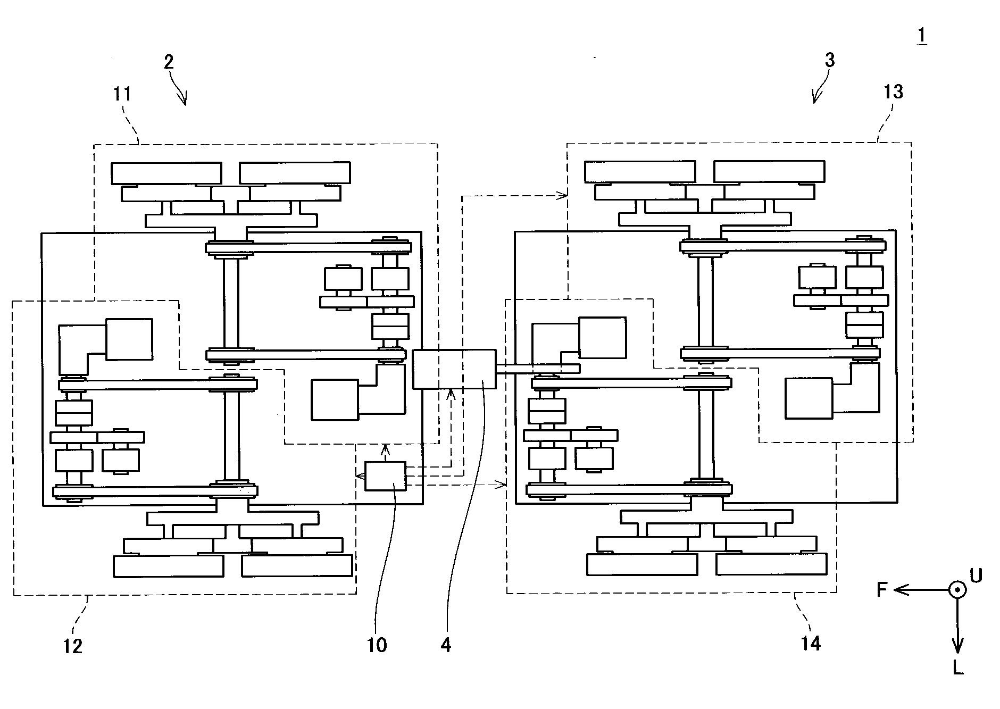

stair-climbing mechanism

A new 8-wheel mechanism was designed to ascend and descend staircases even under low-friction conditions. We evaluated the mechanism on a prototype staircase with a riser of 150 mm and a tread of 320 mm.
Publications
- (US patent) Takashi Izuo, Tomoyuki Takahata, “Motor-driven vehicle,” no. 11724758. (Registerd on 2023 August 15)
- Tomoyuki Takahata and Tatsuya Harada, “Stair climbing mechanism aimed for use in low-friction environments,” The 40th annual conference of the Robotics Society of Japan (RSJ2022), 4H1-02, 2022. (Japanese domestic conference)